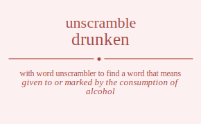

The word found after unscrambling drunken means that given to or marked by the consumption of alcohol, .

The word found after unscrambling drunken means that given to or marked by the consumption of alcohol, .
You can also find solutions for different combinations of letters in drunken like drunken drunkne drunekn drunenk drunnke drunnek druknen druknne drukenn drukenn druknne druknen druenkn druennk drueknn drueknn druennk druenkn drunnke drunnek drunkne drunken drunenk drunekn drnuken drnukne drnuekn drnuenk drnunke drnunek drnkuen drnkune drnkeun drnkenu drnknue drnkneu drneukn drneunk drnekun drneknu drnenuk drnenku drnnuke drnnuek drnnkue drnnkeu drnneuk drnneku drkunen drkunne drkuenn drkuenn drkunne drkunen drknuen drknune drkneun drknenu drknnue drknneu drkeunn drkeunn drkenun drkennu drkenun drkennu drknune drknuen drknnue drknneu drkneun drknenu dreunkn dreunnk dreuknn dreuknn dreunnk dreunkn drenukn drenunk drenkun drenknu drennuk drennku drekunn drekunn dreknun dreknnu dreknun dreknnu drenunk drenukn drennuk drennku drenkun drenknu drnunke drnunek drnukne drnuken drnuenk drnuekn drnnuke drnnuek drnnkue drnnkeu drnneuk drnneku drnkune drnkuen drnknue drnkneu drnkeun drnkenu drneunk drneukn drnenuk drnenku drnekun drneknu durnken durnkne durnekn durnenk durnnke durnnek durknen durknne durkenn durkenn durknne durknen durenkn durennk dureknn dureknn durennk durenkn durnnke durnnek durnkne durnken durnenk durnekn dunrken dunrkne dunrekn dunrenk dunrnke dunrnek dunkren dunkrne dunkern dunkenr dunknre dunkner dunerkn dunernk dunekrn duneknr dunenrk dunenkr dunnrke dunnrek dunnkre dunnker dunnerk dunnekr dukrnen dukrnne dukrenn dukrenn dukrnne dukrnen duknren duknrne duknern duknenr duknnre duknner dukernn dukernn dukenrn dukennr dukenrn dukennr duknrne duknren duknnre duknner duknern duknenr duernkn duernnk duerknn duerknn duernnk duernkn duenrkn duenrnk duenkrn duenknr duennrk duennkr duekrnn duekrnn dueknrn dueknnr dueknrn dueknnr duenrnk duenrkn duennrk duennkr duenkrn duenknr dunrnke dunrnek dunrkne dunrken dunrenk dunrekn dunnrke dunnrek dunnkre dunnker dunnerk dunnekr dunkrne dunkren dunknre dunkner dunkern dunkenr dunernk dunerkn dunenrk dunenkr dunekrn duneknr dnruken dnrukne dnruekn dnruenk dnrunke dnrunek dnrkuen dnrkune dnrkeun dnrkenu dnrknue dnrkneu dnreukn dnreunk dnrekun dnreknu dnrenuk dnrenku dnrnuke dnrnuek dnrnkue dnrnkeu dnrneuk dnrneku dnurken dnurkne dnurekn dnurenk dnurnke dnurnek dnukren dnukrne dnukern dnukenr dnuknre dnukner dnuerkn dnuernk dnuekrn dnueknr dnuenrk dnuenkr dnunrke dnunrek dnunkre dnunker dnunerk dnunekr dnkruen dnkrune dnkreun dnkrenu dnkrnue dnkrneu dnkuren dnkurne dnkuern dnkuenr dnkunre dnkuner dnkerun dnkernu dnkeurn dnkeunr dnkenru dnkenur dnknrue dnknreu dnknure dnknuer dnkneru dnkneur dnerukn dnerunk dnerkun dnerknu dnernuk dnernku dneurkn dneurnk dneukrn dneuknr dneunrk dneunkr dnekrun dnekrnu dnekurn dnekunr dneknru dneknur dnenruk dnenrku dnenurk dnenukr dnenkru dnenkur dnnruke dnnruek dnnrkue dnnrkeu dnnreuk dnnreku dnnurke dnnurek dnnukre dnnuker dnnuerk dnnuekr dnnkrue dnnkreu dnnkure dnnkuer dnnkeru dnnkeur dnneruk dnnerku dnneurk dnneukr dnnekru dnnekur dkrunen dkrunne dkruenn dkruenn dkrunne dkrunen dkrnuen dkrnune dkrneun dkrnenu dkrnnue dkrnneu dkreunn dkreunn dkrenun dkrennu dkrenun dkrennu dkrnune dkrnuen dkrnnue dkrnneu dkrneun dkrnenu dkurnen dkurnne dkurenn dkurenn dkurnne dkurnen dkunren dkunrne dkunern dkunenr dkunnre dkunner dkuernn dkuernn dkuenrn dkuennr dkuenrn dkuennr dkunrne dkunren dkunnre dkunner dkunern dkunenr dknruen dknrune dknreun dknrenu dknrnue dknrneu dknuren dknurne dknuern dknuenr dknunre dknuner dknerun dknernu dkneurn dkneunr dknenru dknenur dknnrue dknnreu dknnure dknnuer dknneru dknneur dkerunn dkerunn dkernun dkernnu dkernun dkernnu dkeurnn dkeurnn dkeunrn dkeunnr dkeunrn dkeunnr dkenrun dkenrnu dkenurn dkenunr dkennru dkennur dkenrun dkenrnu dkenurn dkenunr dkennru dkennur dknrune dknruen dknrnue dknrneu dknreun dknrenu dknurne dknuren dknunre dknuner dknuern dknuenr dknnrue dknnreu dknnure dknnuer dknneru dknneur dknerun dknernu dkneurn dkneunr dknenru dknenur derunkn derunnk deruknn deruknn derunnk derunkn dernukn dernunk dernkun dernknu dernnuk dernnku derkunn derkunn derknun derknnu derknun derknnu dernunk dernukn dernnuk dernnku dernkun dernknu deurnkn deurnnk deurknn deurknn deurnnk deurnkn deunrkn deunrnk deunkrn deunknr deunnrk deunnkr deukrnn deukrnn deuknrn deuknnr deuknrn deuknnr deunrnk deunrkn deunnrk deunnkr deunkrn deunknr denrukn denrunk denrkun denrknu denrnuk denrnku denurkn denurnk denukrn denuknr denunrk denunkr denkrun denkrnu denkurn denkunr denknru denknur dennruk dennrku dennurk dennukr dennkru dennkur dekrunn dekrunn dekrnun dekrnnu dekrnun dekrnnu dekurnn dekurnn dekunrn dekunnr dekunrn dekunnr deknrun deknrnu deknurn deknunr deknnru deknnur deknrun deknrnu deknurn deknunr deknnru deknnur denrunk denrukn denrnuk denrnku denrkun denrknu denurnk denurkn denunrk denunkr denukrn denuknr dennruk dennrku dennurk dennukr dennkru dennkur denkrun denkrnu denkurn denkunr denknru denknur dnrunke dnrunek dnrukne dnruken dnruenk dnruekn dnrnuke dnrnuek dnrnkue dnrnkeu dnrneuk dnrneku dnrkune dnrkuen dnrknue dnrkneu dnrkeun dnrkenu dnreunk dnreukn dnrenuk dnrenku dnrekun dnreknu dnurnke dnurnek dnurkne dnurken dnurenk dnurekn dnunrke dnunrek dnunkre dnunker dnunerk dnunekr dnukrne dnukren dnuknre dnukner dnukern dnukenr dnuernk dnuerkn dnuenrk dnuenkr dnuekrn dnueknr dnnruke dnnruek dnnrkue dnnrkeu dnnreuk dnnreku dnnurke dnnurek dnnukre dnnuker dnnuerk dnnuekr dnnkrue dnnkreu dnnkure dnnkuer dnnkeru dnnkeur dnneruk dnnerku dnneurk dnneukr dnnekru dnnekur dnkrune dnkruen dnkrnue dnkrneu dnkreun dnkrenu dnkurne dnkuren dnkunre dnkuner dnkuern dnkuenr dnknrue dnknreu dnknure dnknuer dnkneru dnkneur dnkerun dnkernu dnkeurn dnkeunr dnkenru dnkenur dnerunk dnerukn dnernuk dnernku dnerkun dnerknu dneurnk dneurkn dneunrk dneunkr dneukrn dneuknr dnenruk dnenrku dnenurk dnenukr dnenkru dnenkur dnekrun dnekrnu dnekurn dnekunr dneknru dneknur rdunken rdunkne rdunekn rdunenk rdunnke rdunnek rduknen rduknne rdukenn rdukenn rduknne rduknen rduenkn rduennk rdueknn rdueknn rduennk rduenkn rdunnke rdunnek rdunkne rdunken rdunenk rdunekn rdnuken rdnukne rdnuekn rdnuenk rdnunke rdnunek rdnkuen rdnkune rdnkeun rdnkenu rdnknue rdnkneu rdneukn rdneunk rdnekun rdneknu rdnenuk rdnenku rdnnuke rdnnuek rdnnkue rdnnkeu rdnneuk rdnneku rdkunen rdkunne rdkuenn rdkuenn rdkunne rdkunen rdknuen rdknune rdkneun rdknenu rdknnue rdknneu rdkeunn rdkeunn rdkenun rdkennu rdkenun rdkennu rdknune rdknuen rdknnue rdknneu rdkneun rdknenu rdeunkn rdeunnk rdeuknn rdeuknn rdeunnk rdeunkn rdenukn rdenunk rdenkun rdenknu rdennuk rdennku rdekunn rdekunn rdeknun rdeknnu rdeknun rdeknnu rdenunk rdenukn rdennuk rdennku rdenkun rdenknu rdnunke rdnunek rdnukne rdnuken rdnuenk rdnuekn rdnnuke rdnnuek rdnnkue rdnnkeu rdnneuk rdnneku rdnkune rdnkuen rdnknue rdnkneu rdnkeun rdnkenu rdneunk rdneukn rdnenuk rdnenku rdnekun rdneknu rudnken rudnkne rudnekn rudnenk rudnnke rudnnek rudknen rudknne rudkenn rudkenn rudknne rudknen rudenkn rudennk rudeknn rudeknn rudennk rudenkn rudnnke rudnnek rudnkne rudnken rudnenk rudnekn rundken rundkne rundekn rundenk rundnke rundnek runkden runkdne runkedn runkend runknde runkned runedkn runednk runekdn runeknd runendk runenkd runndke runndek runnkde runnked runnedk runnekd rukdnen rukdnne rukdenn rukdenn rukdnne rukdnen ruknden rukndne ruknedn ruknend ruknnde ruknned rukednn rukednn rukendn rukennd rukendn rukennd rukndne ruknden ruknnde ruknned ruknedn ruknend ruednkn ruednnk ruedknn ruedknn ruednnk ruednkn ruendkn ruendnk ruenkdn ruenknd ruenndk ruennkd ruekdnn ruekdnn ruekndn rueknnd ruekndn rueknnd ruendnk ruendkn ruenndk ruennkd ruenkdn ruenknd rundnke rundnek rundkne rundken rundenk rundekn runndke runndek runnkde runnked runnedk runnekd runkdne runkden runknde runkned runkedn runkend runednk runedkn runendk runenkd runekdn runeknd rnduken rndukne rnduekn rnduenk rndunke rndunek rndkuen rndkune rndkeun rndkenu rndknue rndkneu rndeukn rndeunk rndekun rndeknu rndenuk rndenku rndnuke rndnuek rndnkue rndnkeu rndneuk rndneku rnudken rnudkne rnudekn rnudenk rnudnke rnudnek rnukden rnukdne rnukedn rnukend rnuknde rnukned rnuedkn rnuednk rnuekdn rnueknd rnuendk rnuenkd rnundke rnundek rnunkde rnunked rnunedk rnunekd rnkduen rnkdune rnkdeun rnkdenu rnkdnue rnkdneu rnkuden rnkudne rnkuedn rnkuend rnkunde rnkuned rnkedun rnkednu rnkeudn rnkeund rnkendu rnkenud rnkndue rnkndeu rnknude rnknued rnknedu rnkneud rnedukn rnedunk rnedkun rnedknu rnednuk rnednku rneudkn rneudnk rneukdn rneuknd rneundk rneunkd rnekdun rnekdnu rnekudn rnekund rnekndu rneknud rnenduk rnendku rnenudk rnenukd rnenkdu rnenkud rnnduke rnnduek rnndkue rnndkeu rnndeuk rnndeku rnnudke rnnudek rnnukde rnnuked rnnuedk rnnuekd rnnkdue rnnkdeu rnnkude rnnkued rnnkedu rnnkeud rnneduk rnnedku rnneudk rnneukd rnnekdu rnnekud rkdunen rkdunne rkduenn rkduenn rkdunne rkdunen rkdnuen rkdnune rkdneun rkdnenu rkdnnue rkdnneu rkdeunn rkdeunn rkdenun rkdennu rkdenun rkdennu rkdnune rkdnuen rkdnnue rkdnneu rkdneun rkdnenu rkudnen rkudnne rkudenn rkudenn rkudnne rkudnen rkunden rkundne rkunedn rkunend rkunnde rkunned rkuednn rkuednn rkuendn rkuennd rkuendn rkuennd rkundne rkunden rkunnde rkunned rkunedn rkunend rknduen rkndune rkndeun rkndenu rkndnue rkndneu rknuden rknudne rknuedn rknuend rknunde rknuned rknedun rknednu rkneudn rkneund rknendu rknenud rknndue rknndeu rknnude rknnued rknnedu rknneud rkedunn rkedunn rkednun rkednnu rkednun rkednnu rkeudnn rkeudnn rkeundn rkeunnd rkeundn rkeunnd rkendun rkendnu rkenudn rkenund rkenndu rkennud rkendun rkendnu rkenudn rkenund rkenndu rkennud rkndune rknduen rkndnue rkndneu rkndeun rkndenu rknudne rknuden rknunde rknuned rknuedn rknuend rknndue rknndeu rknnude rknnued rknnedu rknneud rknedun rknednu rkneudn rkneund rknendu rknenud redunkn redunnk reduknn reduknn redunnk redunkn rednukn rednunk rednkun rednknu rednnuk rednnku redkunn redkunn redknun redknnu redknun redknnu rednunk rednukn rednnuk rednnku rednkun rednknu reudnkn reudnnk reudknn reudknn reudnnk reudnkn reundkn reundnk reunkdn reunknd reunndk reunnkd reukdnn reukdnn reukndn reuknnd reukndn reuknnd reundnk reundkn reunndk reunnkd reunkdn reunknd rendukn rendunk rendkun rendknu rendnuk rendnku renudkn renudnk renukdn renuknd renundk renunkd renkdun renkdnu renkudn renkund renkndu renknud rennduk renndku rennudk rennukd rennkdu rennkud rekdunn rekdunn rekdnun rekdnnu rekdnun rekdnnu rekudnn rekudnn rekundn rekunnd rekundn rekunnd rekndun rekndnu reknudn reknund reknndu reknnud rekndun rekndnu reknudn reknund reknndu reknnud rendunk rendukn rendnuk rendnku rendkun rendknu renudnk renudkn renundk renunkd renukdn renuknd rennduk renndku rennudk rennukd rennkdu rennkud renkdun renkdnu renkudn renkund renkndu renknud rndunke rndunek rndukne rnduken rnduenk rnduekn rndnuke rndnuek rndnkue rndnkeu rndneuk rndneku rndkune rndkuen rndknue rndkneu rndkeun rndkenu rndeunk rndeukn rndenuk rndenku rndekun rndeknu rnudnke rnudnek rnudkne rnudken rnudenk rnudekn rnundke rnundek rnunkde rnunked rnunedk rnunekd rnukdne rnukden rnuknde rnukned rnukedn rnukend rnuednk rnuedkn rnuendk rnuenkd rnuekdn rnueknd rnnduke rnnduek rnndkue rnndkeu rnndeuk rnndeku rnnudke rnnudek rnnukde rnnuked rnnuedk rnnuekd rnnkdue rnnkdeu rnnkude rnnkued rnnkedu rnnkeud rnneduk rnnedku rnneudk rnneukd rnnekdu rnnekud rnkdune rnkduen rnkdnue rnkdneu rnkdeun rnkdenu rnkudne rnkuden rnkunde rnkuned rnkuedn rnkuend rnkndue rnkndeu rnknude rnknued rnknedu rnkneud rnkedun rnkednu rnkeudn rnkeund rnkendu rnkenud rnedunk rnedukn rnednuk rnednku rnedkun rnedknu rneudnk rneudkn rneundk rneunkd rneukdn rneuknd rnenduk rnendku rnenudk rnenukd rnenkdu rnenkud rnekdun rnekdnu rnekudn rnekund rnekndu rneknud udrnken udrnkne udrnekn udrnenk udrnnke udrnnek udrknen udrknne udrkenn udrkenn udrknne udrknen udrenkn udrennk udreknn udreknn udrennk udrenkn udrnnke udrnnek udrnkne udrnken udrnenk udrnekn udnrken udnrkne udnrekn udnrenk udnrnke udnrnek udnkren udnkrne udnkern udnkenr udnknre udnkner udnerkn udnernk udnekrn udneknr udnenrk udnenkr udnnrke udnnrek udnnkre udnnker udnnerk udnnekr udkrnen udkrnne udkrenn udkrenn udkrnne udkrnen udknren udknrne udknern udknenr udknnre udknner udkernn udkernn udkenrn udkennr udkenrn udkennr udknrne udknren udknnre udknner udknern udknenr udernkn udernnk uderknn uderknn udernnk udernkn udenrkn udenrnk udenkrn udenknr udennrk udennkr udekrnn udekrnn udeknrn udeknnr udeknrn udeknnr udenrnk udenrkn udennrk udennkr udenkrn udenknr udnrnke udnrnek udnrkne udnrken udnrenk udnrekn udnnrke udnnrek udnnkre udnnker udnnerk udnnekr udnkrne udnkren udnknre udnkner udnkern udnkenr udnernk udnerkn udnenrk udnenkr udnekrn udneknr urdnken urdnkne urdnekn urdnenk urdnnke urdnnek urdknen urdknne urdkenn urdkenn urdknne urdknen urdenkn urdennk urdeknn urdeknn urdennk urdenkn urdnnke urdnnek urdnkne urdnken urdnenk urdnekn urndken urndkne urndekn urndenk urndnke urndnek urnkden urnkdne urnkedn urnkend urnknde urnkned urnedkn urnednk urnekdn urneknd urnendk urnenkd urnndke urnndek urnnkde urnnked urnnedk urnnekd urkdnen urkdnne urkdenn urkdenn urkdnne urkdnen urknden urkndne urknedn urknend urknnde urknned urkednn urkednn urkendn urkennd urkendn urkennd urkndne urknden urknnde urknned urknedn urknend urednkn urednnk uredknn uredknn urednnk urednkn urendkn urendnk urenkdn urenknd urenndk urennkd urekdnn urekdnn urekndn ureknnd urekndn ureknnd urendnk urendkn urenndk urennkd urenkdn urenknd urndnke urndnek urndkne urndken urndenk urndekn urnndke urnndek urnnkde urnnked urnnedk urnnekd urnkdne urnkden urnknde urnkned urnkedn urnkend urnednk urnedkn urnendk urnenkd urnekdn urneknd undrken undrkne undrekn undrenk undrnke undrnek undkren undkrne undkern undkenr undknre undkner underkn undernk undekrn undeknr undenrk undenkr undnrke undnrek undnkre undnker undnerk undnekr unrdken unrdkne unrdekn unrdenk unrdnke unrdnek unrkden unrkdne unrkedn unrkend unrknde unrkned unredkn unrednk unrekdn unreknd unrendk unrenkd unrndke unrndek unrnkde unrnked unrnedk unrnekd unkdren unkdrne unkdern unkdenr unkdnre unkdner unkrden unkrdne unkredn unkrend unkrnde unkrned unkedrn unkednr unkerdn unkernd unkendr unkenrd unkndre unknder unknrde unknred unknedr unknerd unedrkn unedrnk unedkrn unedknr unednrk unednkr unerdkn unerdnk unerkdn unerknd unerndk unernkd unekdrn unekdnr unekrdn unekrnd unekndr uneknrd unendrk unendkr unenrdk unenrkd unenkdr unenkrd unndrke unndrek unndkre unndker unnderk unndekr unnrdke unnrdek unnrkde unnrked unnredk unnrekd unnkdre unnkder unnkrde unnkred unnkedr unnkerd unnedrk unnedkr unnerdk unnerkd unnekdr unnekrd ukdrnen ukdrnne ukdrenn ukdrenn ukdrnne ukdrnen ukdnren ukdnrne ukdnern ukdnenr ukdnnre ukdnner ukdernn ukdernn ukdenrn ukdennr ukdenrn ukdennr ukdnrne ukdnren ukdnnre ukdnner ukdnern ukdnenr ukrdnen ukrdnne ukrdenn ukrdenn ukrdnne ukrdnen ukrnden ukrndne ukrnedn ukrnend ukrnnde ukrnned ukrednn ukrednn ukrendn ukrennd ukrendn ukrennd ukrndne ukrnden ukrnnde ukrnned ukrnedn ukrnend ukndren ukndrne ukndern ukndenr ukndnre ukndner uknrden uknrdne uknredn uknrend uknrnde uknrned uknedrn uknednr uknerdn uknernd uknendr uknenrd uknndre uknnder uknnrde uknnred uknnedr uknnerd ukedrnn ukedrnn ukednrn ukednnr ukednrn ukednnr ukerdnn ukerdnn ukerndn ukernnd ukerndn ukernnd ukendrn ukendnr ukenrdn ukenrnd ukenndr ukennrd ukendrn ukendnr ukenrdn ukenrnd ukenndr ukennrd ukndrne ukndren ukndnre ukndner ukndern ukndenr uknrdne uknrden uknrnde uknrned uknredn uknrend uknndre uknnder uknnrde uknnred uknnedr uknnerd uknedrn uknednr uknerdn uknernd uknendr uknenrd uedrnkn uedrnnk uedrknn uedrknn uedrnnk uedrnkn uednrkn uednrnk uednkrn uednknr uednnrk uednnkr uedkrnn uedkrnn uedknrn uedknnr uedknrn uedknnr uednrnk uednrkn uednnrk uednnkr uednkrn uednknr uerdnkn uerdnnk uerdknn uerdknn uerdnnk uerdnkn uerndkn uerndnk uernkdn uernknd uernndk uernnkd uerkdnn uerkdnn uerkndn uerknnd uerkndn uerknnd uerndnk uerndkn uernndk uernnkd uernkdn uernknd uendrkn uendrnk uendkrn uendknr uendnrk uendnkr uenrdkn uenrdnk uenrkdn uenrknd uenrndk uenrnkd uenkdrn uenkdnr uenkrdn uenkrnd uenkndr uenknrd uenndrk uenndkr uennrdk uennrkd uennkdr uennkrd uekdrnn uekdrnn uekdnrn uekdnnr uekdnrn uekdnnr uekrdnn uekrdnn uekrndn uekrnnd uekrndn uekrnnd uekndrn uekndnr ueknrdn ueknrnd ueknndr ueknnrd uekndrn uekndnr ueknrdn ueknrnd ueknndr ueknnrd uendrnk uendrkn uendnrk uendnkr uendkrn uendknr uenrdnk uenrdkn uenrndk uenrnkd uenrkdn uenrknd uenndrk uenndkr uennrdk uennrkd uennkdr uennkrd uenkdrn uenkdnr uenkrdn uenkrnd uenkndr uenknrd undrnke undrnek undrkne undrken undrenk undrekn undnrke undnrek undnkre undnker undnerk undnekr undkrne undkren undknre undkner undkern undkenr undernk underkn undenrk undenkr undekrn undeknr unrdnke unrdnek unrdkne unrdken unrdenk unrdekn unrndke unrndek unrnkde unrnked unrnedk unrnekd unrkdne unrkden unrknde unrkned unrkedn unrkend unrednk unredkn unrendk unrenkd unrekdn unreknd unndrke unndrek unndkre unndker unnderk unndekr unnrdke unnrdek unnrkde unnrked unnredk unnrekd unnkdre unnkder unnkrde unnkred unnkedr unnkerd unnedrk unnedkr unnerdk unnerkd unnekdr unnekrd unkdrne unkdren unkdnre unkdner unkdern unkdenr unkrdne unkrden unkrnde unkrned unkredn unkrend unkndre unknder unknrde unknred unknedr unknerd unkedrn unkednr unkerdn unkernd unkendr unkenrd unedrnk unedrkn unednrk unednkr unedkrn unedknr unerdnk unerdkn unerndk unernkd unerkdn unerknd unendrk unendkr unenrdk unenrkd unenkdr unenkrd unekdrn unekdnr unekrdn unekrnd unekndr uneknrd ndruken ndrukne ndruekn ndruenk ndrunke ndrunek ndrkuen ndrkune ndrkeun ndrkenu ndrknue ndrkneu ndreukn ndreunk ndrekun ndreknu ndrenuk ndrenku ndrnuke ndrnuek ndrnkue ndrnkeu ndrneuk ndrneku ndurken ndurkne ndurekn ndurenk ndurnke ndurnek ndukren ndukrne ndukern ndukenr nduknre ndukner nduerkn nduernk nduekrn ndueknr nduenrk nduenkr ndunrke ndunrek ndunkre ndunker ndunerk ndunekr ndkruen ndkrune ndkreun ndkrenu ndkrnue ndkrneu ndkuren ndkurne ndkuern ndkuenr ndkunre ndkuner ndkerun ndkernu ndkeurn ndkeunr ndkenru ndkenur ndknrue ndknreu ndknure ndknuer ndkneru ndkneur nderukn nderunk nderkun nderknu ndernuk ndernku ndeurkn ndeurnk ndeukrn ndeuknr ndeunrk ndeunkr ndekrun ndekrnu ndekurn ndekunr ndeknru ndeknur ndenruk ndenrku ndenurk ndenukr ndenkru ndenkur ndnruke ndnruek ndnrkue ndnrkeu ndnreuk ndnreku ndnurke ndnurek ndnukre ndnuker ndnuerk ndnuekr ndnkrue ndnkreu ndnkure ndnkuer ndnkeru ndnkeur ndneruk ndnerku ndneurk ndneukr ndnekru ndnekur nrduken nrdukne nrduekn nrduenk nrdunke nrdunek nrdkuen nrdkune nrdkeun nrdkenu nrdknue nrdkneu nrdeukn nrdeunk nrdekun nrdeknu nrdenuk nrdenku nrdnuke nrdnuek nrdnkue nrdnkeu nrdneuk nrdneku nrudken nrudkne nrudekn nrudenk nrudnke nrudnek nrukden nrukdne nrukedn nrukend nruknde nrukned nruedkn nruednk nruekdn nrueknd nruendk nruenkd nrundke nrundek nrunkde nrunked nrunedk nrunekd nrkduen nrkdune nrkdeun nrkdenu nrkdnue nrkdneu nrkuden nrkudne nrkuedn nrkuend nrkunde nrkuned nrkedun nrkednu nrkeudn nrkeund nrkendu nrkenud nrkndue nrkndeu nrknude nrknued nrknedu nrkneud nredukn nredunk nredkun nredknu nrednuk nrednku nreudkn nreudnk nreukdn nreuknd nreundk nreunkd nrekdun nrekdnu nrekudn nrekund nrekndu nreknud nrenduk nrendku nrenudk nrenukd nrenkdu nrenkud nrnduke nrnduek nrndkue nrndkeu nrndeuk nrndeku nrnudke nrnudek nrnukde nrnuked nrnuedk nrnuekd nrnkdue nrnkdeu nrnkude nrnkued nrnkedu nrnkeud nrneduk nrnedku nrneudk nrneukd nrnekdu nrnekud nudrken nudrkne nudrekn nudrenk nudrnke nudrnek nudkren nudkrne nudkern nudkenr nudknre nudkner nuderkn nudernk nudekrn nudeknr nudenrk nudenkr nudnrke nudnrek nudnkre nudnker nudnerk nudnekr nurdken nurdkne nurdekn nurdenk nurdnke nurdnek nurkden nurkdne nurkedn nurkend nurknde nurkned nuredkn nurednk nurekdn nureknd nurendk nurenkd nurndke nurndek nurnkde nurnked nurnedk nurnekd nukdren nukdrne nukdern nukdenr nukdnre nukdner nukrden nukrdne nukredn nukrend nukrnde nukrned nukedrn nukednr nukerdn nukernd nukendr nukenrd nukndre nuknder nuknrde nuknred nuknedr nuknerd nuedrkn nuedrnk nuedkrn nuedknr nuednrk nuednkr nuerdkn nuerdnk nuerkdn nuerknd nuerndk nuernkd nuekdrn nuekdnr nuekrdn nuekrnd nuekndr nueknrd nuendrk nuendkr nuenrdk nuenrkd nuenkdr nuenkrd nundrke nundrek nundkre nundker nunderk nundekr nunrdke nunrdek nunrkde nunrked nunredk nunrekd nunkdre nunkder nunkrde nunkred nunkedr nunkerd nunedrk nunedkr nunerdk nunerkd nunekdr nunekrd nkdruen nkdrune nkdreun nkdrenu nkdrnue nkdrneu nkduren nkdurne nkduern nkduenr nkdunre nkduner nkderun nkdernu nkdeurn nkdeunr nkdenru nkdenur nkdnrue nkdnreu nkdnure nkdnuer nkdneru nkdneur nkrduen nkrdune nkrdeun nkrdenu nkrdnue nkrdneu nkruden nkrudne nkruedn nkruend nkrunde nkruned nkredun nkrednu nkreudn nkreund nkrendu nkrenud nkrndue nkrndeu nkrnude nkrnued nkrnedu nkrneud nkudren nkudrne nkudern nkudenr nkudnre nkudner nkurden nkurdne nkuredn nkurend nkurnde nkurned nkuedrn nkuednr nkuerdn nkuernd nkuendr nkuenrd nkundre nkunder nkunrde nkunred nkunedr nkunerd nkedrun nkedrnu nkedurn nkedunr nkednru nkednur nkerdun nkerdnu nkerudn nkerund nkerndu nkernud nkeudrn nkeudnr nkeurdn nkeurnd nkeundr nkeunrd nkendru nkendur nkenrdu nkenrud nkenudr nkenurd nkndrue nkndreu nkndure nknduer nknderu nkndeur nknrdue nknrdeu nknrude nknrued nknredu nknreud nknudre nknuder nknurde nknured nknuedr nknuerd nknedru nknedur nknerdu nknerud nkneudr nkneurd nedrukn nedrunk nedrkun nedrknu nedrnuk nedrnku nedurkn nedurnk nedukrn neduknr nedunrk nedunkr nedkrun nedkrnu nedkurn nedkunr nedknru nedknur nednruk nednrku nednurk nednukr nednkru nednkur nerdukn nerdunk nerdkun nerdknu nerdnuk nerdnku nerudkn nerudnk nerukdn neruknd nerundk nerunkd nerkdun nerkdnu nerkudn nerkund nerkndu nerknud nernduk nerndku nernudk nernukd nernkdu nernkud neudrkn neudrnk neudkrn neudknr neudnrk neudnkr neurdkn neurdnk neurkdn neurknd neurndk neurnkd neukdrn neukdnr neukrdn neukrnd neukndr neuknrd neundrk neundkr neunrdk neunrkd neunkdr neunkrd nekdrun nekdrnu nekdurn nekdunr nekdnru nekdnur nekrdun nekrdnu nekrudn nekrund nekrndu nekrnud nekudrn nekudnr nekurdn nekurnd nekundr nekunrd nekndru nekndur neknrdu neknrud neknudr neknurd nendruk nendrku nendurk nendukr nendkru nendkur nenrduk nenrdku nenrudk nenrukd nenrkdu nenrkud nenudrk nenudkr nenurdk nenurkd nenukdr nenukrd nenkdru nenkdur nenkrdu nenkrud nenkudr nenkurd nndruke nndruek nndrkue nndrkeu nndreuk nndreku nndurke nndurek nndukre nnduker nnduerk nnduekr nndkrue nndkreu nndkure nndkuer nndkeru nndkeur nnderuk nnderku nndeurk nndeukr nndekru nndekur nnrduke nnrduek nnrdkue nnrdkeu nnrdeuk nnrdeku nnrudke nnrudek nnrukde nnruked nnruedk nnruekd nnrkdue nnrkdeu nnrkude nnrkued nnrkedu nnrkeud nnreduk nnredku nnreudk nnreukd nnrekdu nnrekud nnudrke nnudrek nnudkre nnudker nnuderk nnudekr nnurdke nnurdek nnurkde nnurked nnuredk nnurekd nnukdre nnukder nnukrde nnukred nnukedr nnukerd nnuedrk nnuedkr nnuerdk nnuerkd nnuekdr nnuekrd nnkdrue nnkdreu nnkdure nnkduer nnkderu nnkdeur nnkrdue nnkrdeu nnkrude nnkrued nnkredu nnkreud nnkudre nnkuder nnkurde nnkured nnkuedr nnkuerd nnkedru nnkedur nnkerdu nnkerud nnkeudr nnkeurd nnedruk nnedrku nnedurk nnedukr nnedkru nnedkur nnerduk nnerdku nnerudk nnerukd nnerkdu nnerkud nneudrk nneudkr nneurdk nneurkd nneukdr nneukrd nnekdru nnekdur nnekrdu nnekrud nnekudr nnekurd kdrunen kdrunne kdruenn kdruenn kdrunne kdrunen kdrnuen kdrnune kdrneun kdrnenu kdrnnue kdrnneu kdreunn kdreunn kdrenun kdrennu kdrenun kdrennu kdrnune kdrnuen kdrnnue kdrnneu kdrneun kdrnenu kdurnen kdurnne kdurenn kdurenn kdurnne kdurnen kdunren kdunrne kdunern kdunenr kdunnre kdunner kduernn kduernn kduenrn kduennr kduenrn kduennr kdunrne kdunren kdunnre kdunner kdunern kdunenr kdnruen kdnrune kdnreun kdnrenu kdnrnue kdnrneu kdnuren kdnurne kdnuern kdnuenr kdnunre kdnuner kdnerun kdnernu kdneurn kdneunr kdnenru kdnenur kdnnrue kdnnreu kdnnure kdnnuer kdnneru kdnneur kderunn kderunn kdernun kdernnu kdernun kdernnu kdeurnn kdeurnn kdeunrn kdeunnr kdeunrn kdeunnr kdenrun kdenrnu kdenurn kdenunr kdennru kdennur kdenrun kdenrnu kdenurn kdenunr kdennru kdennur kdnrune kdnruen kdnrnue kdnrneu kdnreun kdnrenu kdnurne kdnuren kdnunre kdnuner kdnuern kdnuenr kdnnrue kdnnreu kdnnure kdnnuer kdnneru kdnneur kdnerun kdnernu kdneurn kdneunr kdnenru kdnenur krdunen krdunne krduenn krduenn krdunne krdunen krdnuen krdnune krdneun krdnenu krdnnue krdnneu krdeunn krdeunn krdenun krdennu krdenun krdennu krdnune krdnuen krdnnue krdnneu krdneun krdnenu krudnen krudnne krudenn krudenn krudnne krudnen krunden krundne krunedn krunend krunnde krunned kruednn kruednn kruendn kruennd kruendn kruennd krundne krunden krunnde krunned krunedn krunend krnduen krndune krndeun krndenu krndnue krndneu krnuden krnudne krnuedn krnuend krnunde krnuned krnedun krnednu krneudn krneund krnendu krnenud krnndue krnndeu krnnude krnnued krnnedu krnneud kredunn kredunn krednun krednnu krednun krednnu kreudnn kreudnn kreundn kreunnd kreundn kreunnd krendun krendnu krenudn krenund krenndu krennud krendun krendnu krenudn krenund krenndu krennud krndune krnduen krndnue krndneu krndeun krndenu krnudne krnuden krnunde krnuned krnuedn krnuend krnndue krnndeu krnnude krnnued krnnedu krnneud krnedun krnednu krneudn krneund krnendu krnenud kudrnen kudrnne kudrenn kudrenn kudrnne kudrnen kudnren kudnrne kudnern kudnenr kudnnre kudnner kudernn kudernn kudenrn kudennr kudenrn kudennr kudnrne kudnren kudnnre kudnner kudnern kudnenr kurdnen kurdnne kurdenn kurdenn kurdnne kurdnen kurnden kurndne kurnedn kurnend kurnnde kurnned kurednn kurednn kurendn kurennd kurendn kurennd kurndne kurnden kurnnde kurnned kurnedn kurnend kundren kundrne kundern kundenr kundnre kundner kunrden kunrdne kunredn kunrend kunrnde kunrned kunedrn kunednr kunerdn kunernd kunendr kunenrd kunndre kunnder kunnrde kunnred kunnedr kunnerd kuedrnn kuedrnn kuednrn kuednnr kuednrn kuednnr kuerdnn kuerdnn kuerndn kuernnd kuerndn kuernnd kuendrn kuendnr kuenrdn kuenrnd kuenndr kuennrd kuendrn kuendnr kuenrdn kuenrnd kuenndr kuennrd kundrne kundren kundnre kundner kundern kundenr kunrdne kunrden kunrnde kunrned kunredn kunrend kunndre kunnder kunnrde kunnred kunnedr kunnerd kunedrn kunednr kunerdn kunernd kunendr kunenrd kndruen kndrune kndreun kndrenu kndrnue kndrneu knduren kndurne knduern knduenr kndunre knduner knderun kndernu kndeurn kndeunr kndenru kndenur kndnrue kndnreu kndnure kndnuer kndneru kndneur knrduen knrdune knrdeun knrdenu knrdnue knrdneu knruden knrudne knruedn knruend knrunde knruned knredun knrednu knreudn knreund knrendu knrenud knrndue knrndeu knrnude knrnued knrnedu knrneud knudren knudrne knudern knudenr knudnre knudner knurden knurdne knuredn knurend knurnde knurned knuedrn knuednr knuerdn knuernd knuendr knuenrd knundre knunder knunrde knunred knunedr knunerd knedrun knedrnu knedurn knedunr knednru knednur knerdun knerdnu knerudn knerund knerndu knernud kneudrn kneudnr kneurdn kneurnd kneundr kneunrd knendru knendur knenrdu knenrud knenudr knenurd knndrue knndreu knndure knnduer knnderu knndeur knnrdue knnrdeu knnrude knnrued knnredu knnreud knnudre knnuder knnurde knnured knnuedr knnuerd knnedru knnedur knnerdu knnerud knneudr knneurd kedrunn kedrunn kedrnun kedrnnu kedrnun kedrnnu kedurnn kedurnn kedunrn kedunnr kedunrn kedunnr kednrun kednrnu kednurn kednunr kednnru kednnur kednrun kednrnu kednurn kednunr kednnru kednnur kerdunn kerdunn kerdnun kerdnnu kerdnun kerdnnu kerudnn kerudnn kerundn kerunnd kerundn kerunnd kerndun kerndnu kernudn kernund kernndu kernnud kerndun kerndnu kernudn kernund kernndu kernnud keudrnn keudrnn keudnrn keudnnr keudnrn keudnnr keurdnn keurdnn keurndn keurnnd keurndn keurnnd keundrn keundnr keunrdn keunrnd keunndr keunnrd keundrn keundnr keunrdn keunrnd keunndr keunnrd kendrun kendrnu kendurn kendunr kendnru kendnur kenrdun kenrdnu kenrudn kenrund kenrndu kenrnud kenudrn kenudnr kenurdn kenurnd kenundr kenunrd kenndru kenndur kennrdu kennrud kennudr kennurd kendrun kendrnu kendurn kendunr kendnru kendnur kenrdun kenrdnu kenrudn kenrund kenrndu kenrnud kenudrn kenudnr kenurdn kenurnd kenundr kenunrd kenndru kenndur kennrdu kennrud kennudr kennurd kndrune kndruen kndrnue kndrneu kndreun kndrenu kndurne knduren kndunre knduner knduern knduenr kndnrue kndnreu kndnure kndnuer kndneru kndneur knderun kndernu kndeurn kndeunr kndenru kndenur knrdune knrduen knrdnue knrdneu knrdeun knrdenu knrudne knruden knrunde knruned knruedn knruend knrndue knrndeu knrnude knrnued knrnedu knrneud knredun knrednu knreudn knreund knrendu knrenud knudrne knudren knudnre knudner knudern knudenr knurdne knurden knurnde knurned knuredn knurend knundre knunder knunrde knunred knunedr knunerd knuedrn knuednr knuerdn knuernd knuendr knuenrd knndrue knndreu knndure knnduer knnderu knndeur knnrdue knnrdeu knnrude knnrued knnredu knnreud knnudre knnuder knnurde knnured knnuedr knnuerd knnedru knnedur knnerdu knnerud knneudr knneurd knedrun knedrnu knedurn knedunr knednru knednur knerdun knerdnu knerudn knerund knerndu knernud kneudrn kneudnr kneurdn kneurnd kneundr kneunrd knendru knendur knenrdu knenrud knenudr knenurd edrunkn edrunnk edruknn edruknn edrunnk edrunkn edrnukn edrnunk edrnkun edrnknu edrnnuk edrnnku edrkunn edrkunn edrknun edrknnu edrknun edrknnu edrnunk edrnukn edrnnuk edrnnku edrnkun edrnknu edurnkn edurnnk edurknn edurknn edurnnk edurnkn edunrkn edunrnk edunkrn edunknr edunnrk edunnkr edukrnn edukrnn eduknrn eduknnr eduknrn eduknnr edunrnk edunrkn edunnrk edunnkr edunkrn edunknr ednrukn ednrunk ednrkun ednrknu ednrnuk ednrnku ednurkn ednurnk ednukrn ednuknr ednunrk ednunkr ednkrun ednkrnu ednkurn ednkunr ednknru ednknur ednnruk ednnrku ednnurk ednnukr ednnkru ednnkur edkrunn edkrunn edkrnun edkrnnu edkrnun edkrnnu edkurnn edkurnn edkunrn edkunnr edkunrn edkunnr edknrun edknrnu edknurn edknunr edknnru edknnur edknrun edknrnu edknurn edknunr edknnru edknnur ednrunk ednrukn ednrnuk ednrnku ednrkun ednrknu ednurnk ednurkn ednunrk ednunkr ednukrn ednuknr ednnruk ednnrku ednnurk ednnukr ednnkru ednnkur ednkrun ednkrnu ednkurn ednkunr ednknru ednknur erdunkn erdunnk erduknn erduknn erdunnk erdunkn erdnukn erdnunk erdnkun erdnknu erdnnuk erdnnku erdkunn erdkunn erdknun erdknnu erdknun erdknnu erdnunk erdnukn erdnnuk erdnnku erdnkun erdnknu erudnkn erudnnk erudknn erudknn erudnnk erudnkn erundkn erundnk erunkdn erunknd erunndk erunnkd erukdnn erukdnn erukndn eruknnd erukndn eruknnd erundnk erundkn erunndk erunnkd erunkdn erunknd erndukn erndunk erndkun erndknu erndnuk erndnku ernudkn ernudnk ernukdn ernuknd ernundk ernunkd ernkdun ernkdnu ernkudn ernkund ernkndu ernknud ernnduk ernndku ernnudk ernnukd ernnkdu ernnkud erkdunn erkdunn erkdnun erkdnnu erkdnun erkdnnu erkudnn erkudnn erkundn erkunnd erkundn erkunnd erkndun erkndnu erknudn erknund erknndu erknnud erkndun erkndnu erknudn erknund erknndu erknnud erndunk erndukn erndnuk erndnku erndkun erndknu ernudnk ernudkn ernundk ernunkd ernukdn ernuknd ernnduk ernndku ernnudk ernnukd ernnkdu ernnkud ernkdun ernkdnu ernkudn ernkund ernkndu ernknud eudrnkn eudrnnk eudrknn eudrknn eudrnnk eudrnkn eudnrkn eudnrnk eudnkrn eudnknr eudnnrk eudnnkr eudkrnn eudkrnn eudknrn eudknnr eudknrn eudknnr eudnrnk eudnrkn eudnnrk eudnnkr eudnkrn eudnknr eurdnkn eurdnnk eurdknn eurdknn eurdnnk eurdnkn eurndkn eurndnk eurnkdn eurnknd eurnndk eurnnkd eurkdnn eurkdnn eurkndn eurknnd eurkndn eurknnd eurndnk eurndkn eurnndk eurnnkd eurnkdn eurnknd eundrkn eundrnk eundkrn eundknr eundnrk eundnkr eunrdkn eunrdnk eunrkdn eunrknd eunrndk eunrnkd eunkdrn eunkdnr eunkrdn eunkrnd eunkndr eunknrd eunndrk eunndkr eunnrdk eunnrkd eunnkdr eunnkrd eukdrnn eukdrnn eukdnrn eukdnnr eukdnrn eukdnnr eukrdnn eukrdnn eukrndn eukrnnd eukrndn eukrnnd eukndrn eukndnr euknrdn euknrnd euknndr euknnrd eukndrn eukndnr euknrdn euknrnd euknndr euknnrd eundrnk eundrkn eundnrk eundnkr eundkrn eundknr eunrdnk eunrdkn eunrndk eunrnkd eunrkdn eunrknd eunndrk eunndkr eunnrdk eunnrkd eunnkdr eunnkrd eunkdrn eunkdnr eunkrdn eunkrnd eunkndr eunknrd endrukn endrunk endrkun endrknu endrnuk endrnku endurkn endurnk endukrn enduknr endunrk endunkr endkrun endkrnu endkurn endkunr endknru endknur endnruk endnrku endnurk endnukr endnkru endnkur enrdukn enrdunk enrdkun enrdknu enrdnuk enrdnku enrudkn enrudnk enrukdn enruknd enrundk enrunkd enrkdun enrkdnu enrkudn enrkund enrkndu enrknud enrnduk enrndku enrnudk enrnukd enrnkdu enrnkud enudrkn enudrnk enudkrn enudknr enudnrk enudnkr enurdkn enurdnk enurkdn enurknd enurndk enurnkd enukdrn enukdnr enukrdn enukrnd enukndr enuknrd enundrk enundkr enunrdk enunrkd enunkdr enunkrd enkdrun enkdrnu enkdurn enkdunr enkdnru enkdnur enkrdun enkrdnu enkrudn enkrund enkrndu enkrnud enkudrn enkudnr enkurdn enkurnd enkundr enkunrd enkndru enkndur enknrdu enknrud enknudr enknurd enndruk enndrku enndurk enndukr enndkru enndkur ennrduk ennrdku ennrudk ennrukd ennrkdu ennrkud ennudrk ennudkr ennurdk ennurkd ennukdr ennukrd ennkdru ennkdur ennkrdu ennkrud ennkudr ennkurd ekdrunn ekdrunn ekdrnun ekdrnnu ekdrnun ekdrnnu ekdurnn ekdurnn ekdunrn ekdunnr ekdunrn ekdunnr ekdnrun ekdnrnu ekdnurn ekdnunr ekdnnru ekdnnur ekdnrun ekdnrnu ekdnurn ekdnunr ekdnnru ekdnnur ekrdunn ekrdunn ekrdnun ekrdnnu ekrdnun ekrdnnu ekrudnn ekrudnn ekrundn ekrunnd ekrundn ekrunnd ekrndun ekrndnu ekrnudn ekrnund ekrnndu ekrnnud ekrndun ekrndnu ekrnudn ekrnund ekrnndu ekrnnud ekudrnn ekudrnn ekudnrn ekudnnr ekudnrn ekudnnr ekurdnn ekurdnn ekurndn ekurnnd ekurndn ekurnnd ekundrn ekundnr ekunrdn ekunrnd ekunndr ekunnrd ekundrn ekundnr ekunrdn ekunrnd ekunndr ekunnrd ekndrun ekndrnu ekndurn ekndunr ekndnru ekndnur eknrdun eknrdnu eknrudn eknrund eknrndu eknrnud eknudrn eknudnr eknurdn eknurnd eknundr eknunrd eknndru eknndur eknnrdu eknnrud eknnudr eknnurd ekndrun ekndrnu ekndurn ekndunr ekndnru ekndnur eknrdun eknrdnu eknrudn eknrund eknrndu eknrnud eknudrn eknudnr eknurdn eknurnd eknundr eknunrd eknndru eknndur eknnrdu eknnrud eknnudr eknnurd endrunk endrukn endrnuk endrnku endrkun endrknu endurnk endurkn endunrk endunkr endukrn enduknr endnruk endnrku endnurk endnukr endnkru endnkur endkrun endkrnu endkurn endkunr endknru endknur enrdunk enrdukn enrdnuk enrdnku enrdkun enrdknu enrudnk enrudkn enrundk enrunkd enrukdn enruknd enrnduk enrndku enrnudk enrnukd enrnkdu enrnkud enrkdun enrkdnu enrkudn enrkund enrkndu enrknud enudrnk enudrkn enudnrk enudnkr enudkrn enudknr enurdnk enurdkn enurndk enurnkd enurkdn enurknd enundrk enundkr enunrdk enunrkd enunkdr enunkrd enukdrn enukdnr enukrdn enukrnd enukndr enuknrd enndruk enndrku enndurk enndukr enndkru enndkur ennrduk ennrdku ennrudk ennrukd ennrkdu ennrkud ennudrk ennudkr ennurdk ennurkd ennukdr ennukrd ennkdru ennkdur ennkrdu ennkrud ennkudr ennkurd enkdrun enkdrnu enkdurn enkdunr enkdnru enkdnur enkrdun enkrdnu enkrudn enkrund enkrndu enkrnud enkudrn enkudnr enkurdn enkurnd enkundr enkunrd enkndru enkndur enknrdu enknrud enknudr enknurd ndrunke ndrunek ndrukne ndruken ndruenk ndruekn ndrnuke ndrnuek ndrnkue ndrnkeu ndrneuk ndrneku ndrkune ndrkuen ndrknue ndrkneu ndrkeun ndrkenu ndreunk ndreukn ndrenuk ndrenku ndrekun ndreknu ndurnke ndurnek ndurkne ndurken ndurenk ndurekn ndunrke ndunrek ndunkre ndunker ndunerk ndunekr ndukrne ndukren nduknre ndukner ndukern ndukenr nduernk nduerkn nduenrk nduenkr nduekrn ndueknr ndnruke ndnruek ndnrkue ndnrkeu ndnreuk ndnreku ndnurke ndnurek ndnukre ndnuker ndnuerk ndnuekr ndnkrue ndnkreu ndnkure ndnkuer ndnkeru ndnkeur ndneruk ndnerku ndneurk ndneukr ndnekru ndnekur ndkrune ndkruen ndkrnue ndkrneu ndkreun ndkrenu ndkurne ndkuren ndkunre ndkuner ndkuern ndkuenr ndknrue ndknreu ndknure ndknuer ndkneru ndkneur ndkerun ndkernu ndkeurn ndkeunr ndkenru ndkenur nderunk nderukn ndernuk ndernku nderkun nderknu ndeurnk ndeurkn ndeunrk ndeunkr ndeukrn ndeuknr ndenruk ndenrku ndenurk ndenukr ndenkru ndenkur ndekrun ndekrnu ndekurn ndekunr ndeknru ndeknur nrdunke nrdunek nrdukne nrduken nrduenk nrduekn nrdnuke nrdnuek nrdnkue nrdnkeu nrdneuk nrdneku nrdkune nrdkuen nrdknue nrdkneu nrdkeun nrdkenu nrdeunk nrdeukn nrdenuk nrdenku nrdekun nrdeknu nrudnke nrudnek nrudkne nrudken nrudenk nrudekn nrundke nrundek nrunkde nrunked nrunedk nrunekd nrukdne nrukden nruknde nrukned nrukedn nrukend nruednk nruedkn nruendk nruenkd nruekdn nrueknd nrnduke nrnduek nrndkue nrndkeu nrndeuk nrndeku nrnudke nrnudek nrnukde nrnuked nrnuedk nrnuekd nrnkdue nrnkdeu nrnkude nrnkued nrnkedu nrnkeud nrneduk nrnedku nrneudk nrneukd nrnekdu nrnekud nrkdune nrkduen nrkdnue nrkdneu nrkdeun nrkdenu nrkudne nrkuden nrkunde nrkuned nrkuedn nrkuend nrkndue nrkndeu nrknude nrknued nrknedu nrkneud nrkedun nrkednu nrkeudn nrkeund nrkendu nrkenud nredunk nredukn nrednuk nrednku nredkun nredknu nreudnk nreudkn nreundk nreunkd nreukdn nreuknd nrenduk nrendku nrenudk nrenukd nrenkdu nrenkud nrekdun nrekdnu nrekudn nrekund nrekndu nreknud nudrnke nudrnek nudrkne nudrken nudrenk nudrekn nudnrke nudnrek nudnkre nudnker nudnerk nudnekr nudkrne nudkren nudknre nudkner nudkern nudkenr nudernk nuderkn nudenrk nudenkr nudekrn nudeknr nurdnke nurdnek nurdkne nurdken nurdenk nurdekn nurndke nurndek nurnkde nurnked nurnedk nurnekd nurkdne nurkden nurknde nurkned nurkedn nurkend nurednk nuredkn nurendk nurenkd nurekdn nureknd nundrke nundrek nundkre nundker nunderk nundekr nunrdke nunrdek nunrkde nunrked nunredk nunrekd nunkdre nunkder nunkrde nunkred nunkedr nunkerd nunedrk nunedkr nunerdk nunerkd nunekdr nunekrd nukdrne nukdren nukdnre nukdner nukdern nukdenr nukrdne nukrden nukrnde nukrned nukredn nukrend nukndre nuknder nuknrde nuknred nuknedr nuknerd nukedrn nukednr nukerdn nukernd nukendr nukenrd nuedrnk nuedrkn nuednrk nuednkr nuedkrn nuedknr nuerdnk nuerdkn nuerndk nuernkd nuerkdn nuerknd nuendrk nuendkr nuenrdk nuenrkd nuenkdr nuenkrd nuekdrn nuekdnr nuekrdn nuekrnd nuekndr nueknrd nndruke nndruek nndrkue nndrkeu nndreuk nndreku nndurke nndurek nndukre nnduker nnduerk nnduekr nndkrue nndkreu nndkure nndkuer nndkeru nndkeur nnderuk nnderku nndeurk nndeukr nndekru nndekur nnrduke nnrduek nnrdkue nnrdkeu nnrdeuk nnrdeku nnrudke nnrudek nnrukde nnruked nnruedk nnruekd nnrkdue nnrkdeu nnrkude nnrkued nnrkedu nnrkeud nnreduk nnredku nnreudk nnreukd nnrekdu nnrekud nnudrke nnudrek nnudkre nnudker nnuderk nnudekr nnurdke nnurdek nnurkde nnurked nnuredk nnurekd nnukdre nnukder nnukrde nnukred nnukedr nnukerd nnuedrk nnuedkr nnuerdk nnuerkd nnuekdr nnuekrd nnkdrue nnkdreu nnkdure nnkduer nnkderu nnkdeur nnkrdue nnkrdeu nnkrude nnkrued nnkredu nnkreud nnkudre nnkuder nnkurde nnkured nnkuedr nnkuerd nnkedru nnkedur nnkerdu nnkerud nnkeudr nnkeurd nnedruk nnedrku nnedurk nnedukr nnedkru nnedkur nnerduk nnerdku nnerudk nnerukd nnerkdu nnerkud nneudrk nneudkr nneurdk nneurkd nneukdr nneukrd nnekdru nnekdur nnekrdu nnekrud nnekudr nnekurd nkdrune nkdruen nkdrnue nkdrneu nkdreun nkdrenu nkdurne nkduren nkdunre nkduner nkduern nkduenr nkdnrue nkdnreu nkdnure nkdnuer nkdneru nkdneur nkderun nkdernu nkdeurn nkdeunr nkdenru nkdenur nkrdune nkrduen nkrdnue nkrdneu nkrdeun nkrdenu nkrudne nkruden nkrunde nkruned nkruedn nkruend nkrndue nkrndeu nkrnude nkrnued nkrnedu nkrneud nkredun nkrednu nkreudn nkreund nkrendu nkrenud nkudrne nkudren nkudnre nkudner nkudern nkudenr nkurdne nkurden nkurnde nkurned nkuredn nkurend nkundre nkunder nkunrde nkunred nkunedr nkunerd nkuedrn nkuednr nkuerdn nkuernd nkuendr nkuenrd nkndrue nkndreu nkndure nknduer nknderu nkndeur nknrdue nknrdeu nknrude nknrued nknredu nknreud nknudre nknuder nknurde nknured nknuedr nknuerd nknedru nknedur nknerdu nknerud nkneudr nkneurd nkedrun nkedrnu nkedurn nkedunr nkednru nkednur nkerdun nkerdnu nkerudn nkerund nkerndu nkernud nkeudrn nkeudnr nkeurdn nkeurnd nkeundr nkeunrd nkendru nkendur nkenrdu nkenrud nkenudr nkenurd nedrunk nedrukn nedrnuk nedrnku nedrkun nedrknu nedurnk nedurkn nedunrk nedunkr nedukrn neduknr nednruk nednrku nednurk nednukr nednkru nednkur nedkrun nedkrnu nedkurn nedkunr nedknru nedknur nerdunk nerdukn nerdnuk nerdnku nerdkun nerdknu nerudnk nerudkn nerundk nerunkd nerukdn neruknd nernduk nerndku nernudk nernukd nernkdu nernkud nerkdun nerkdnu nerkudn nerkund nerkndu nerknud neudrnk neudrkn neudnrk neudnkr neudkrn neudknr neurdnk neurdkn neurndk neurnkd neurkdn neurknd neundrk neundkr neunrdk neunrkd neunkdr neunkrd neukdrn neukdnr neukrdn neukrnd neukndr neuknrd nendruk nendrku nendurk nendukr nendkru nendkur nenrduk nenrdku nenrudk nenrukd nenrkdu nenrkud nenudrk nenudkr nenurdk nenurkd nenukdr nenukrd nenkdru nenkdur nenkrdu nenkrud nenkudr nenkurd nekdrun nekdrnu nekdurn nekdunr nekdnru nekdnur nekrdun nekrdnu nekrudn nekrund nekrndu nekrnud nekudrn nekudnr nekurdn nekurnd nekundr nekunrd nekndru nekndur neknrdu neknrud neknudr neknurd.
Unscramble Words is registered trademark.